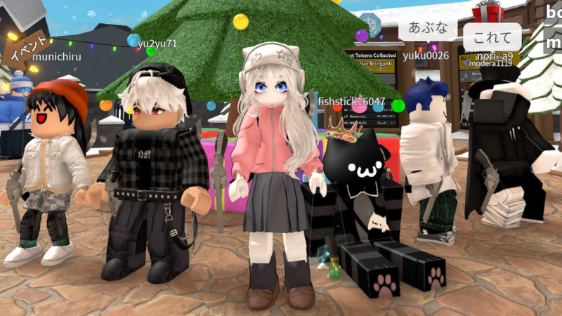

遊びながら学ぶ
私たちルミナスゲームズは、ゲームを通じて知的好奇心を育む『遊びながら学ぶ』活動を大切にしています。
✅ワクワクを力に：子どもたちの「好き」を原動力に、新しいことへ挑戦する心を育てます。
✅未来に繋がる力：ゲーム体験を通じて、ネットリテラシーや問題解決能力を自然に身につけられるコンテンツを目指しています。
✅ワクワクを力に：子どもたちの「好き」を原動力に、新しいことへ挑戦する心を育てます。
✅未来に繋がる力：ゲーム体験を通じて、ネットリテラシーや問題解決能力を自然に身につけられるコンテンツを目指しています。

守られた遊び場
保護者の方が最も心配されるネット上でのトラブルを防ぐため、徹底した管理を行っています。
✅プラットフォームの適正運営：ライブ配信内での安全なコミュニケーションを推奨し、不適切な言葉や行動がないか、配信者が常に目を配っています。
✅ルールとマナーの共有：参加する子どもたちが互いに尊重し合えるよう、ネットリテラシーを育む声掛けを行っています。
✅プラットフォームの適正運営：ライブ配信内での安全なコミュニケーションを推奨し、不適切な言葉や行動がないか、配信者が常に目を配っています。
✅ルールとマナーの共有：参加する子どもたちが互いに尊重し合えるよう、ネットリテラシーを育む声掛けを行っています。

誰かの役に立つ喜び
「自分の知識が誰かの役に立つ」という成功体験を大切にしています。
✅教え合いの文化：ロブロックスを通じて得た知識を仲間に共有することで、「自分にもできる」「感謝される」という自信に繋げます。
✅主体性の育成：受動的に動画を見るだけでなく、自ら考え、発信し、誰かをサポートする主体的な姿勢を応援します。
✅教え合いの文化：ロブロックスを通じて得た知識を仲間に共有することで、「自分にもできる」「感謝される」という自信に繋げます。
✅主体性の育成：受動的に動画を見るだけでなく、自ら考え、発信し、誰かをサポートする主体的な姿勢を応援します。

創造力と想像力
ゲームを「消費」するのではなく「創造」するきっかけを提供します。
✅クリエイティブな刺激：自由度の高いRobloxの特性を活かし、子どもたちの豊かな発想力や想像力を形にする楽しさを伝えます。
✅ポジティブな視聴体験：刺激の強い内容ではなく、親子で安心して見られる、健全で前向きな動画制作を心がけています。
✅クリエイティブな刺激：自由度の高いRobloxの特性を活かし、子どもたちの豊かな発想力や想像力を形にする楽しさを伝えます。
✅ポジティブな視聴体験：刺激の強い内容ではなく、親子で安心して見られる、健全で前向きな動画制作を心がけています。

一緒に見守るパートナーとして
私たちは、保護者の方と同じ目線で子どもたちの成長を見守りたいと考えています。
✅透明性の確保：どのような目的で配信を行っているかを明確にし、いつでも安心して活動を確認いただける環境を整えています。
✅一歩を踏み出す勇気を応援：初めての子でも馴染めるよう、温かい雰囲気づくりを大切にしています。お子様の小さな「やってみたい」という気持ちを、私たちは全力で歓迎し、サポートします。
✅透明性の確保：どのような目的で配信を行っているかを明確にし、いつでも安心して活動を確認いただける環境を整えています。
✅一歩を踏み出す勇気を応援：初めての子でも馴染めるよう、温かい雰囲気づくりを大切にしています。お子様の小さな「やってみたい」という気持ちを、私たちは全力で歓迎し、サポートします。